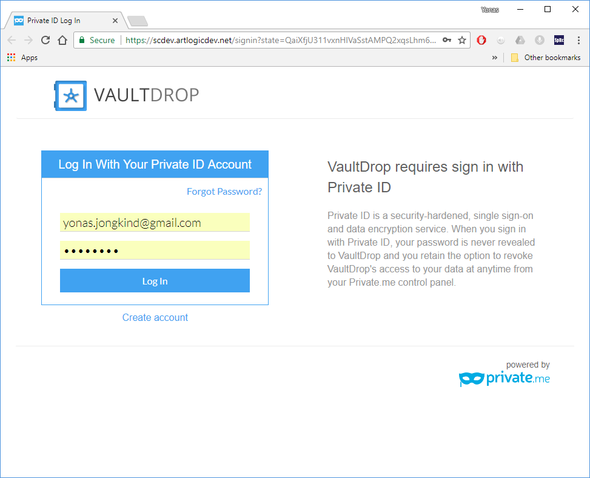

Installing the Desktop Synchronization Client
You can download the latest version of the ownCloud Desktop Synchronization Client from the VaultDrop download page. There are clients for Mac OS X, and Microsoft Windows.
Installation on Mac OS X and Windows is the same as for any software application: download the program and then double-click it to launch the installation, and then follow the installation wizard. After it is installed and configured the sync client will automatically keep itself updated.
Installation Wizard
The installation wizard takes you step-by-step through configuration options and account setup. On the first screen it will initiate the login process in the browser.
Enter your ownCloud login on the next screen.
On the Local Folder Option screen you may sync
all of your files on the VaultDrop server, or select individual folders. The
default local sync folder is VaultDrop, in your home directory. You may
change this as well.
When you have completed selecting your sync folders, click the Connect button at the bottom right. The client will attempt to connect to your VaultDrop server, and when it is successful you’ll see two buttons: one to connect to your VaultDrop Web GUI, and one to open your local folder. It will also start synchronizing your files.